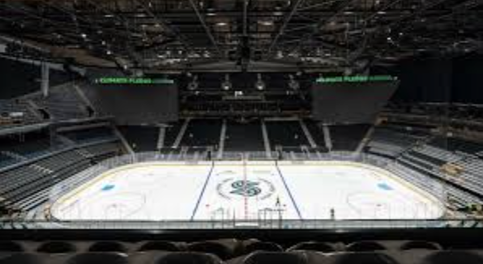
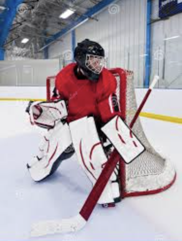
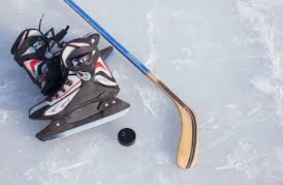
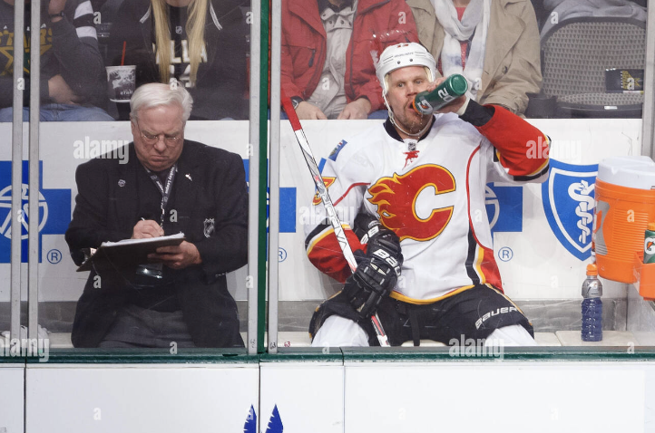
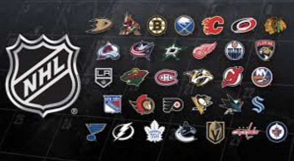

Área de juego:
Se juega en una pista de hielo, que mide aproximadamente 60 metros de largo por 30 metros de ancho.
Equipamiento:
Los jugadores usan un palo de hockey para golpear un disco de caucho (puck) y se desplazan sobre patines de hielo. Además, llevan protecciones adicionales como cascos, hombreras, y guantes para evitar lesiones.
 Puntuación:
Se anota un gol cuando el disco cruza la línea de gol y entra en la portería del equipo contrario. Cada gol vale un punto, y el equipo que tenga más puntos al final de los tres períodos de juego, gana el partido.

Reglas básicas:
No se puede usar el cuerpo para controlar el disco, solo el palo. Para evitar a los jugadores del equipo contrario, se puede hacer contacto físico para intentar recuperar el disco, a esto se le llama "get the puck". El juego se detiene si el disco sale de los límites de la pista. Las faltas se sancionan con tiempo fuera para el jugador infractor en la "penalty box" (zona de penalización). El partido se divide en tres períodos de 20 minutos cada uno, con descansos entre ellos.
El juego comienza con un saque en el centro de la pista, y los jugadores deben patinar rápidamente para tomar el control del disco. Utilizan una combinación de pases y dribblings para avanzar, tratando de evitar a los defensores mientras buscan oportunidades para marcar.
Torneos:
El torneo más destacado es la Stanley Cup, que se otorga al campeón de la NHL (National Hockey League) cada año. La NHL es la principal liga profesional de hockey sobre hielo en Norteamérica, y cuenta con equipos de Estados Unidos y Canadá. Además, hay torneos internacionales como el World Ice Hockey Championship y el Olympic Hockey Tournament, donde las selecciones nacionales compiten por el título mundial y olímpico. También existen ligas menores y competiciones en otros países, como la KHL en Rusia y la SHL en Suecia.
Historia:
El hockey sobre hielo se desarrolló en Canadá a fines del siglo XIX tomando influencias de deportes europeos Es muy popular en países fríos como Canadá, Rusia y los países nórdicos Se convirtió en un deporte olímpico en 1920 y ha sido parte de los Juegos Olímpicos de Invierno desde 1924.